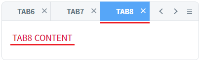
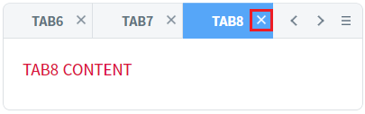
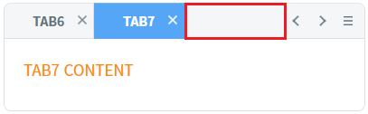
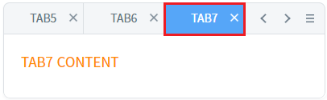
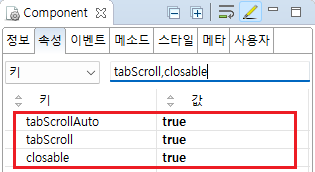

TabControl의 'tabScrollAuto' 속성을 사용하여, 탭을 닫았을 때 탭이 표시되는 영역에 탭을 채워서 보이도록 설정한 예제입니다.
'tabScrollAuto' 속성은 'tabScroll' 속성이 'true'로 설정되어야 동작됩니다.
(기본 동작) tabScrollAuto 미사용
tabScrollAuto 사용
탭의 영역을 마지막(오른쪽 끝) 탭을 선택하고, 탭 닫기 버튼을 클릭하여 닫았을 때 닫힌 탭의 영역을 비교합니다.
예제 영역 '(기본 동작) tabScrollAuto 미사용'에서 테스트합니다.1
STEP 1: 초기 상태를 확인합니다.
TabControl에 탭이 총 8개('TAB1','TAB2','TAB3','TAB4','TAB5','TAB6','TAB7','TAB8')가 생성되어 있고, 탭 영역에는 탭 'TAB6', 'TAB7', 'TAB8'이 보여지고, 마지막 탭 'TAB8'이 선택되어 있습니다.
Image 1.브라우저(Chrome) 실행 예시

2
STEP 2: 마지막 탭을 닫습니다.
마지막 탭 'TAB8'의 닫기 버튼을 클릭하여 탭을 닫습니다.
Image 2.브라우저(Chrome) 실행 예시

3
STEP 3: 실행 결과를 확인합니다.
탭 영역에서 닫힌 탭 영역이 빈 공간으로 유지됩니다. 탭 영역에 보여지는 탭은 'TAB6','TAB7' 입니다. (처음 그려진 상태에서 탭만 닫힌 상태)
Image 3.브라우저(Chrome) 실행 예시

예제 영역 'tabScrollAuto 사용'에서 테스트합니다.1
STEP 1: 초기 상태를 확인합니다.
TabControl에 탭이 총 8개('TAB1','TAB2','TAB3','TAB4','TAB5','TAB6','TAB7','TAB8')가 생성되어 있고, 탭 영역에는 탭 'TAB6', 'TAB7', 'TAB8'이 보여지고, 마지막 탭 'TAB8'이 선택되어 있습니다.
Image 4.브라우저(Chrome) 실행 예시
2
STEP 2: 마지막 탭을 닫습니다.
마지막 탭 'TAB8'의 닫기 버튼을 클릭하여 탭을 닫습니다.
Image 5.브라우저(Chrome) 실행 예시
3
STEP 3: 실행 결과를 확인합니다.
닫힌 탭 영역이 남아 있는 이전 탭으로 채워집니다. 탭 영역에 보여지는 탭은 'TAB5','TAB6','TAB7' 입니다.
Image 6.브라우저(Chrome) 실행 예시

1
TabControl의 속성을 정의합니다.
[필수] tabScroll="true"
탭 영역에 탭들의 이동과 선택의 편의성을 제공하는 기능 사용 설정
[필수] tabScrollAuto="true"
tabScroll이 오른쪽 끝까지 이동한 상태에서 tab을 닫았을 때, 남아있는 tab이 있을 경우 화면에 보이는 tab의 개수를 유지시켜 주는 기능 사용
[선택] closable="true"
[default:false, true] tab의 닫기 버튼을 활성화
Image 7.웹스퀘어 스튜디오의 Component View - 속성 설정 예시

Example 1.Source
<!-- tabControl 소스 본문 예시 --> <w2:tabControl tabScroll="true" tabScrollAuto="true" closable="true" id="tac_exam2"> <!-- 중략 --> </w2:tabControl>
tabScroll
tabScrollAuto
closable